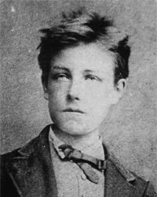

Артюр Рембо
Роки життя:1854−1891
Читати:
«Відчуття»
Артюр Рембо народився 20 жовтня 1854 року в Шарлевиле на північному сході Франції. Його батько, Фредерік Рембо, за професією військовий, служив в Алжирі, мати, Марі-Катрін-Віталі Кюиф, була із заможної селянської родини. Коли хлопчикові виповнилося чотири роки, батько залишив сім'ю, з тих пір Артюра виховувала мати. Початкову освіту Рембо отримав в Шарлевильском ліцеї. Незабаром після публікації першого вірша у 1870 році, у віці 16 років Рембо відправився в подорож по півночі Франції і південь Бельгії.
У віці сімнадцяти років Рембо знайомиться в Парижі з поетом Полем Верленом і на деякий час стає його близьким другом. Верлен запрошує Рембо в Париж і оплачує йому дорогу.
Прибувши до Парижа, Рембо поселяється в будинку у Верлена, звідки його дружина, сімнадцятирічна вагітна Матильда Моті незабаром виганяє його за грубість і неохайність; він живе по черзі у літератора й критика Теодора Банвіль, поета і шансоньє Шарля Кро, композитора Жана («Ернеста») Кабана, художника Жана-Луї Форена. Верлен і Рембо беруть участь у зборах літературних гуртків «Погані хлопці» і «Чертыхатели», дружать, пиячать, дискутують, сваряться і миряться.
В кінці жовтня через Рембо виникла перша сварка Верлена з Матільдою, яка обурюється, коли Рембо, не сприймає «міщанську обстановку» сімейства Моте, намагається вирвати Верлена з цього середовища.
В кінці грудня на черговому обіді «Поганих хлопчиків» Рембо влаштовує скандал і легко ранить тростиною-шпагою фотографа Каржá; Рембо вигнаний з гуртка; Верлен знімає для нього кімнату на вулиці Кампань-Прем'єр в XIV окрузі Парижа, в районі Монпарнасу.
У Парижі Рембо бере участь у повстанні Паризької комуни.
У 1872 Поль Верлен кидає сім'ю і їде з Рембо в Лондон. Деякий час проживши там, вони подорожують по Європі і розлучаються в Брюсселі, після того як Верлен у палкій суперечці під дією абсенту прострілює Рембо зап'ясті. Верлен був засуджений на два роки в'язниці. Після розриву з Верленом Рембо повертається додому, на ферму Роше.
Після цього Рембо перестає писати і подорожує по світу до 1880 року. Потім в Африці (в основному в Єгипті та Ефіопії), а також у Ємені він займається торгівлею кави, прянощами, шкурами та зброєю.
У лютому 1891 року Рембо повернувся до Франції, де йому ампутували ногу через ракової пухлини. У госпіталі за ним доглядала сестра, яка приїхала з Шарлевиля. Рембо помер у Марселі, в госпіталі, 10 листопада 1891 року. Похований у Шарлевиле.